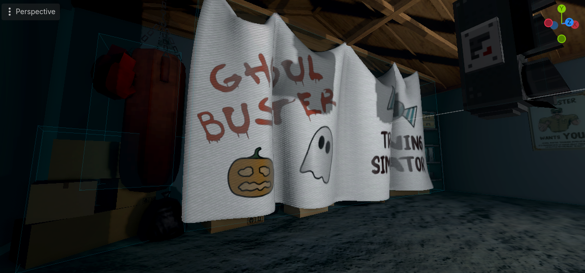
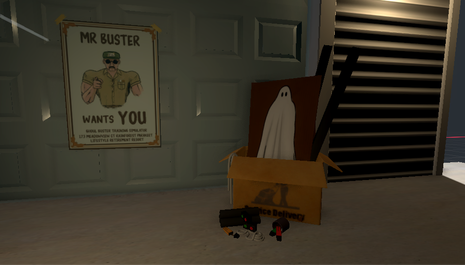
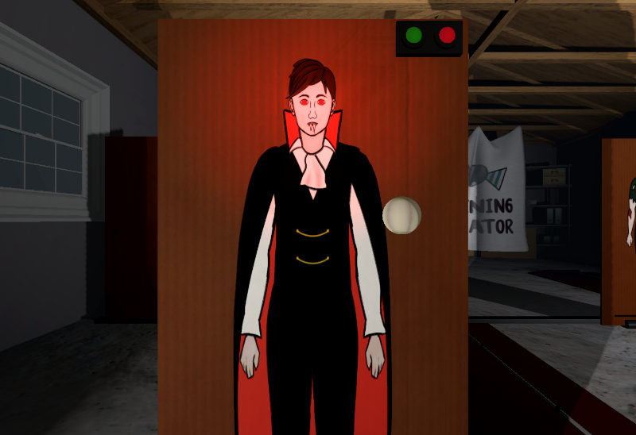
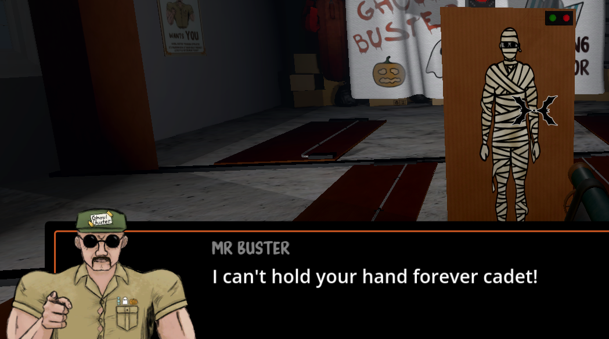
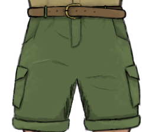

The Idea
The game started off with the idea: a comedic game where you spot monsters vs costumes in a police training style paper target simulation. It was originally going to be a more ‘official’ program, where the ghoul busters were a legitimate organisation like police. This evolved into something different by developing a concrete goal for the player’s experience and then testing every game-play/setting/writing decision against that desired experience.
Design Philosophy
The comedy of the original idea was designed to come from taking something silly, extremely seriously. By focusing on this style of comedy I evolved the context, moving away from a legitimate organisation into one guy taking this concept so seriously he sets up an entire training course in his retirement village garage. The environment was designed by testing each idea against this concept as well. For example, the backdrop hanging at the back of the garage obscuring shelving, boxes and bags tells the story of Mr Buster pushing all the things he was storing in the garage to the back to make room for the simulator and trying to cover it with a sheet he drew the logo onto. The box of materials outside the garage in the menu screen and the cardboard boards of the simulator highlight Mr Buster having made all this by hand. Everything, including Sound Design was based on enhancing the comedy of the retirement village garage, such as the menu ambience with dogs barking, birds and car noises triggering intermittently.
-



Solving Design Problems
The basic gameplay design was: board flips up → use visual cues to identify ghoul or civilian → shoot or don’t → success/failure This worked but the problem was it lacked enough variety to keep the player engaged throughout the 'training'. In many first person shooters, the main mechanic can be summarised as 'kill the thing', or in Ghoul Buster's case 'identify the thing'. FPS games keep the player engaged by offering variety in the *how*. Taking that principle I added new ghoul types that required different player actions to identify them like the Vampire who the player must throw garlic at to elicit a reaction. If their eyes light up and they hiss, it's a ghoul.
Another aspect of gameplay that presented a problem was how to integrate Mr Buster's lectures. In the game the player is completing a training course, one that Mr Buster is taking very seriously, so there needed to be lectures where he teaches the player about ghoul identification. The problem was having lectures for everything both interrupted gameplay and left the player feeling like their hand was being held the whole time. So I added popup hints for some ghoul introductions like the mummy, to keep more momentum wilst still preserving a major aspect of the game's story. Mr Buster introduces the new ghoul type but tells the player they have to apply the Ghoul Busting principles he has taught them thus far to work it out for themselves.

Solving System Problems
This project required a number of interconnected systems with a game loop that had to handle a wide range of optional runtime behaviours whilst maintaining generic, single responsibility code. I was able to leverage my data parsing background and build a custom level editor resource that could be read my a level_manager class to run levels from board and flow data.

Character Design
Mr Buster is intense, militant and crafty (in the artistic way). I wanted him to be extremely muscular like a caricature of a military commander, his shirt straining across his chest. His outfit was designed to look military-esque but clearly not be a real uniform and instead be off-the-rack cargo style clothing. "Ghoul Buster" is taped to a patrol cap and finally, above his pocket are halloween themed stickers, where military medals would usually go. And his poster advertising his training program is of course a play on the famous 'We Want You' military recruitment poster.
-



Experience
Completing a polished game from ideation to release has cemented learned skills and taught me knew ones. There were things, like 3D modelling, that I had to learn for the first time for this project. Having a really strong creative vision and then learning the skills required to make that vision a reality, like when I modelled the fabric backdrop, was extremely satisfying. I am excited for future projects where I can build on my skills.